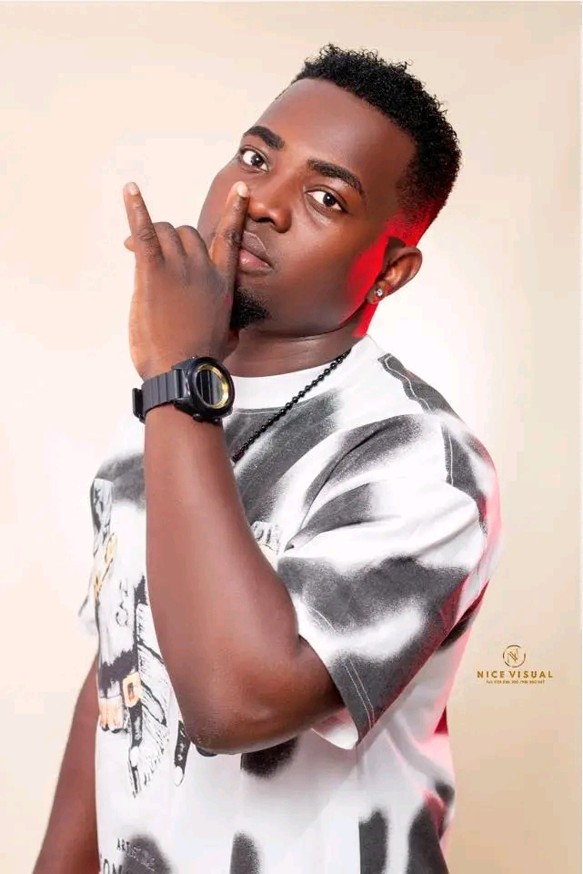
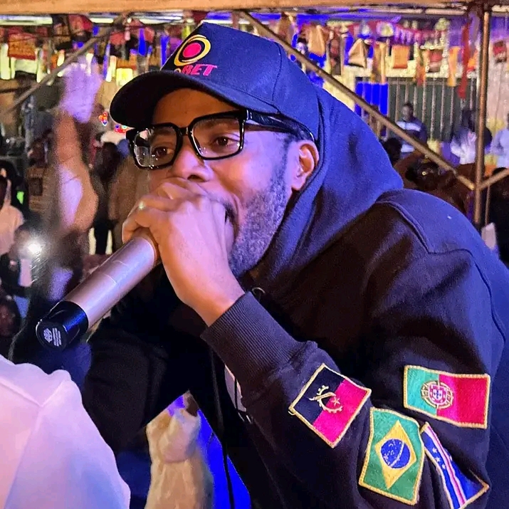
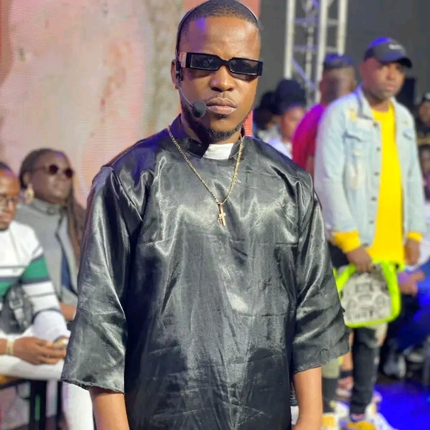
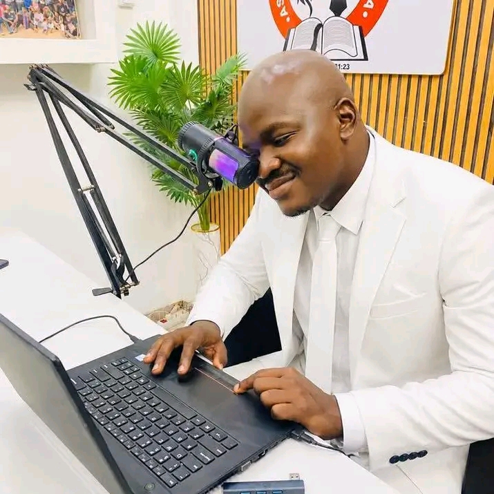
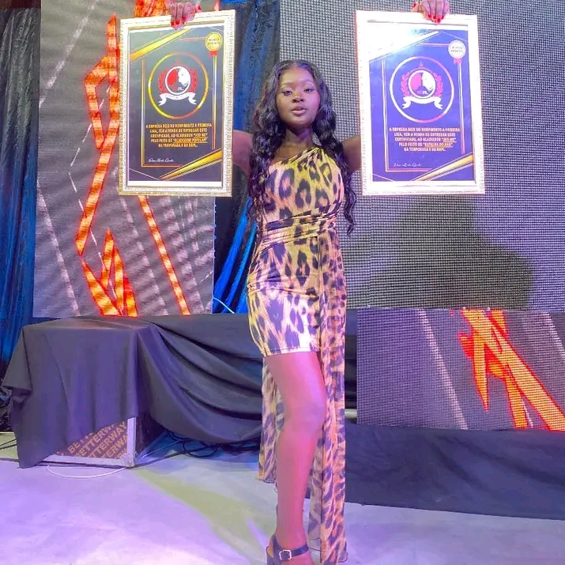
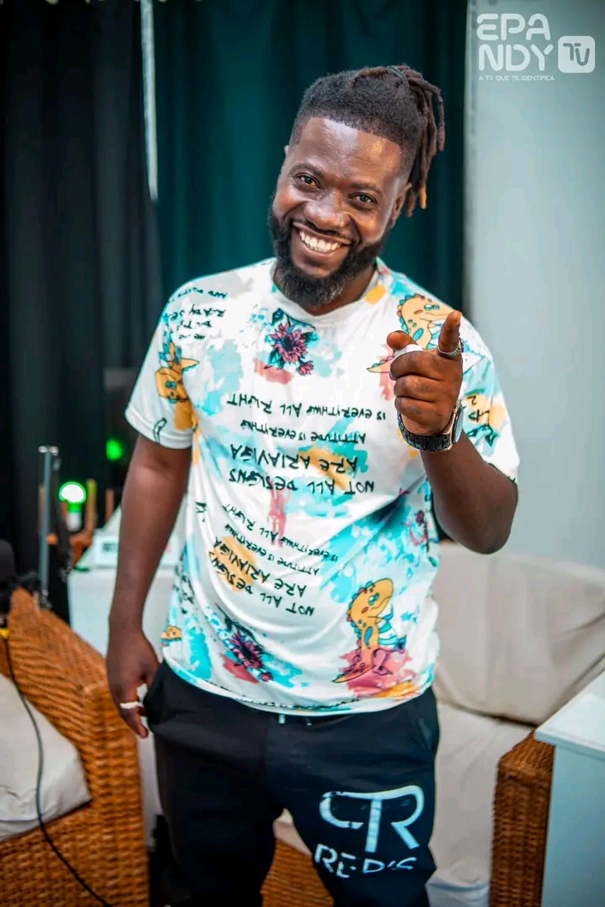
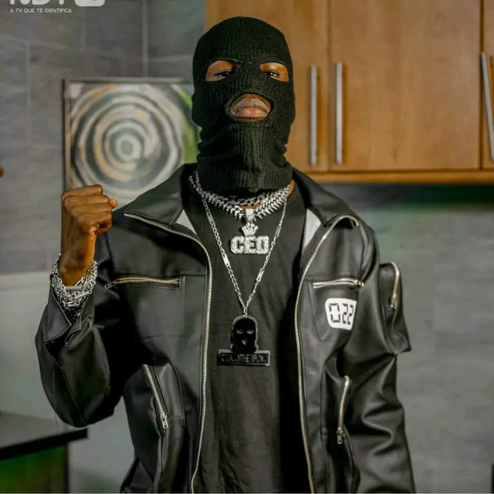
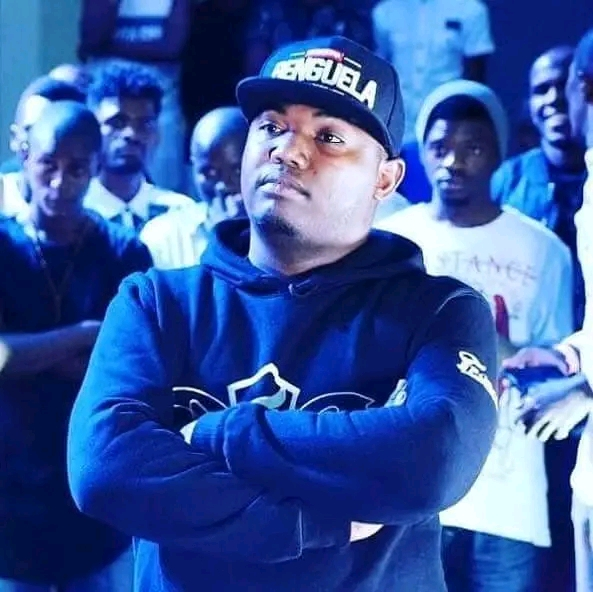
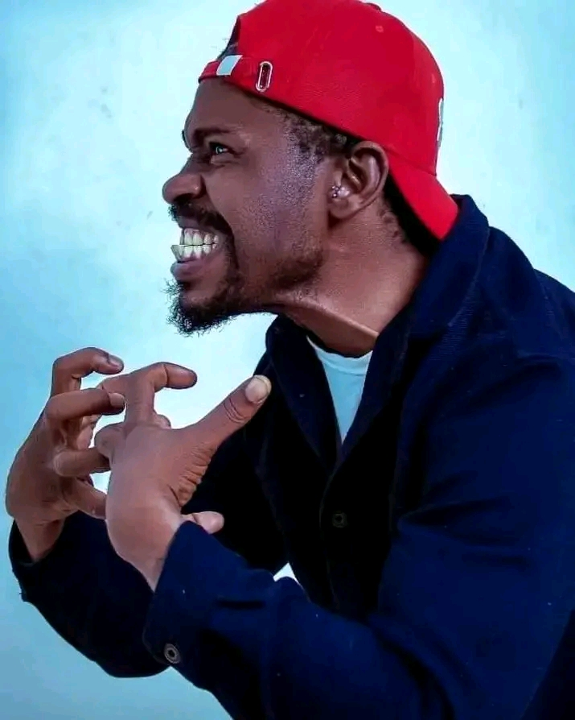

ESTATUTO: Rei da Temporada 8
BRAZZHA
Sobre o gladiador
O melhor gladiador da Rrpl, conhecido também como o "Fogo que rima" ou simplesmesnte "Deus lírico"
Melhor barra

ESTATUTO: Rei das Temporadas 1 & 3
MENTE MÁGICA
Sobre o gladiador
O primeiro gladiador que colocou inteligência(conteúdos cientificos às suas rimas)
Melhor barra

ESTATUTO: Rei da Temporada 11
KANGA DJI
Sobre o gladiador
O Gladiador mais insano da história da Rrpl
Melhor barra

ESTATUTO: Rei das Temporadas 4, 5, 7
SALOMÃO REI
Sobre o gladiador
Primeiro gladiador a levar a coroa 2 vezes consecutiva e o uníco tricampeão
Melhor barra
ESTATUTO: Rei da Temporada 9
VALDEMAR
Sobre o gladiador
O Gladiador mais témido na sua temporada de estreia
Melhor barra

ESTATUTO: Melhor Gladiadora da história da Rrpl
JEO MC
Sobre o gladiador
Começou a batalhar muito jovem, evoluindo a cada batalha e tornou-se a rainha sem coroa
Melhor barra

ESTATUTO: Gladiador mais consistente da história da Rrpl
PUNCHLINEIRO
Sobre o gladiador
Gladiador com mais batalhas na Rrpl, e um grande exemplo de motivacão
Melhor barra

ESTATUTO: Gladiador mais premiado da história da Rrpl
COLOMBIANO
Sobre o gladiador
Um glsdiador muito diferente eextremamente moderno, trouxe uma nova vibe ao game
Melhor barra

ESTATUTO: Matador de reis
TANAY Z
Sobre o gladiador
Um rei sem coroa, tem a batalha mais vista da história da Rrpl
Melhor barra

ESTATUTO: Lenda da Rrpl
PAIZÃO
Sobre o gladiador
Lenda da Rrpl, um dos mais antigos do movimento "Anjo da maldade"